Звериный оркестр
Деревянная сцена, музыкальные зверята и тёплые софиты.
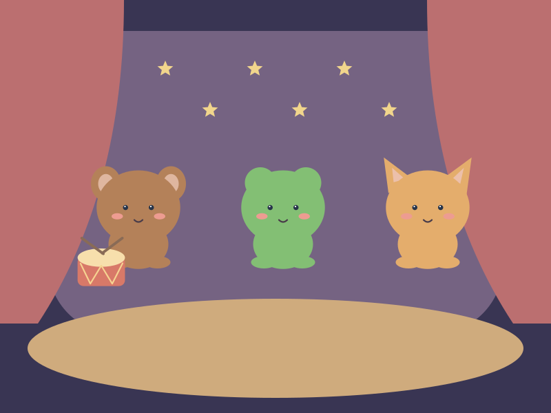

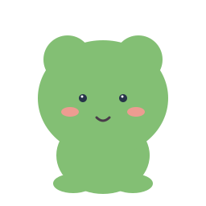
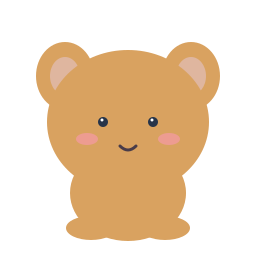
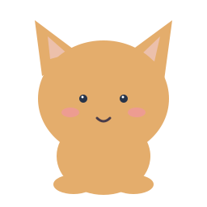
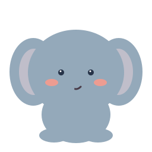

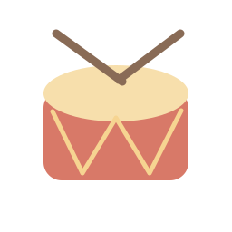
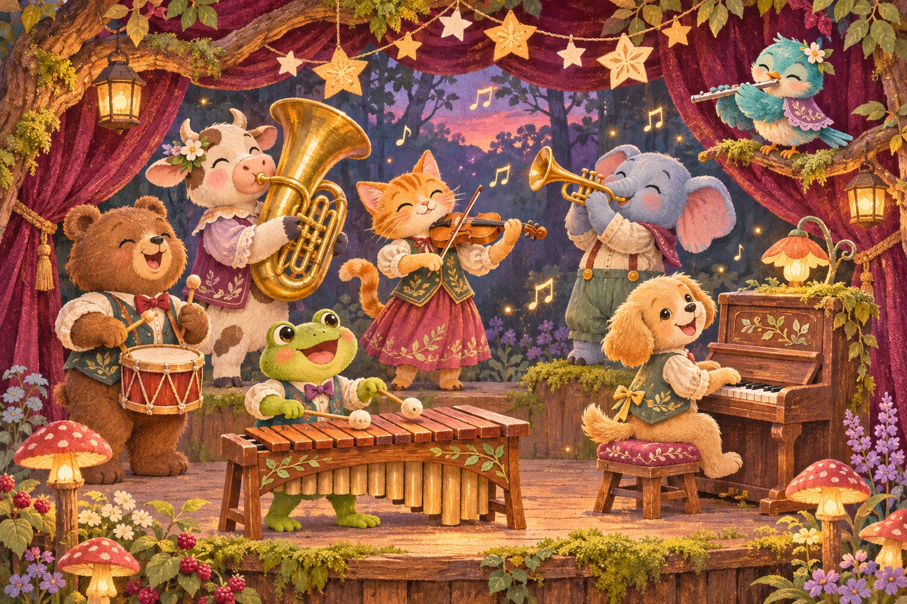
Считай и играй
Счётные предметы с ясным силуэтом и три добрых проводника.
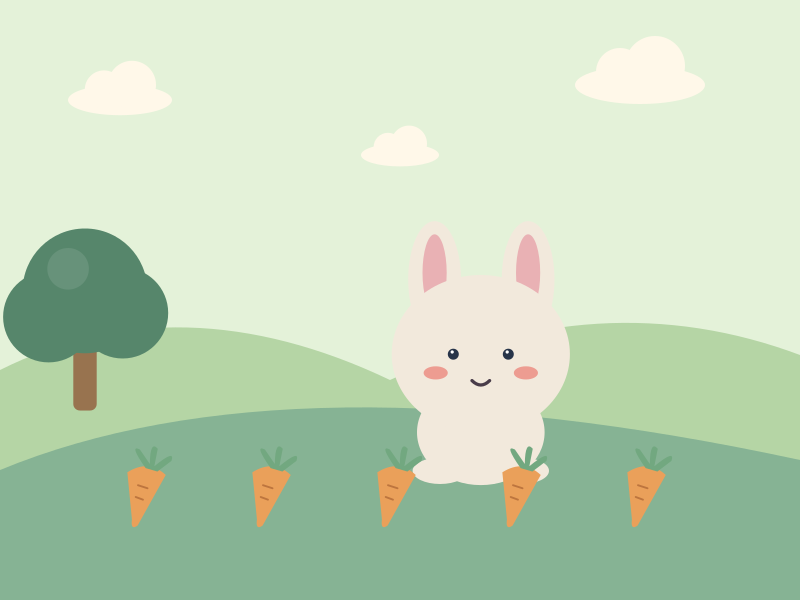
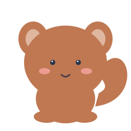
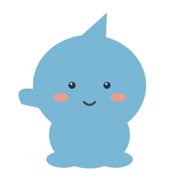
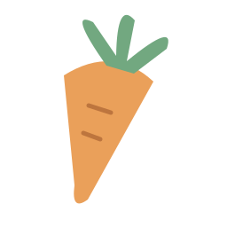
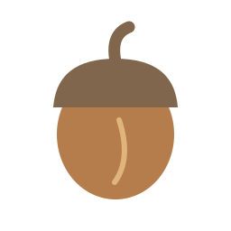
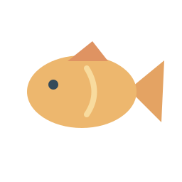
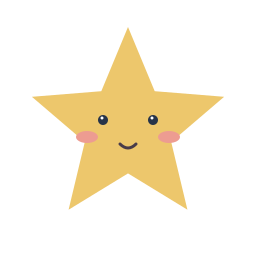
Рисовалка
Чистый лист, волшебные инструменты и раскраски без мелких деталей.
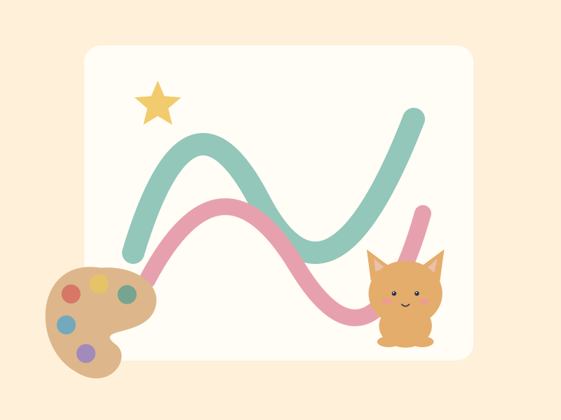
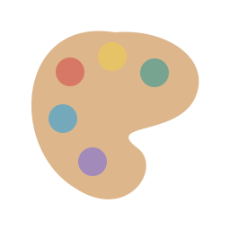
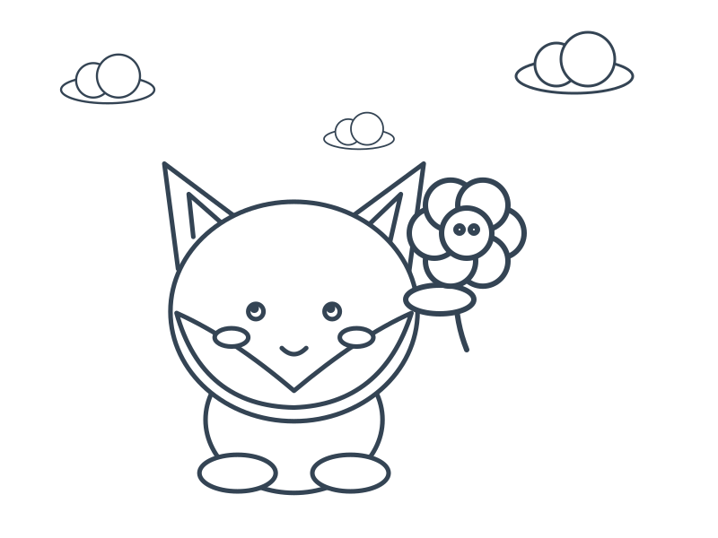
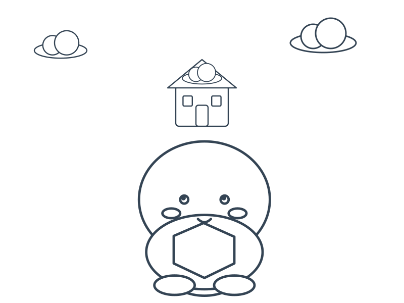
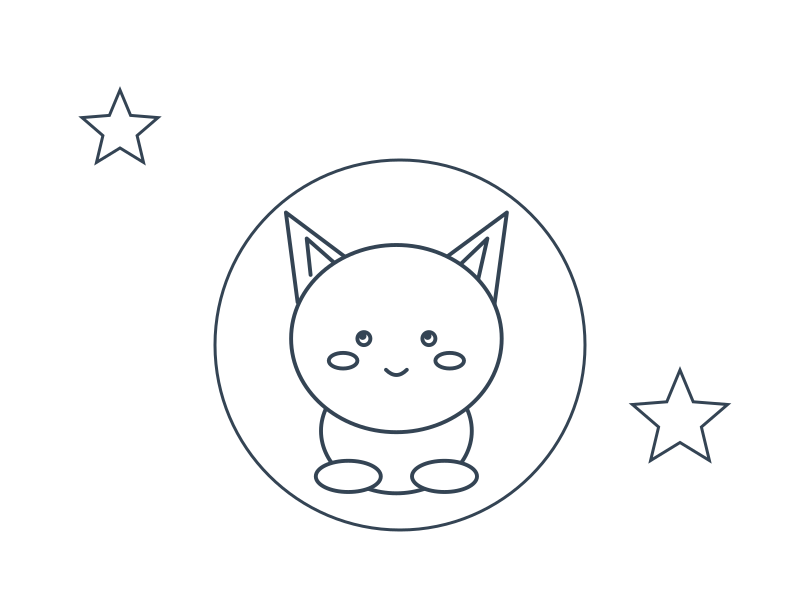
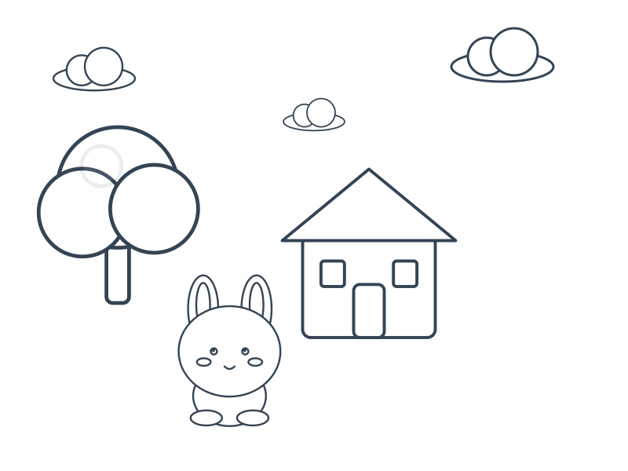
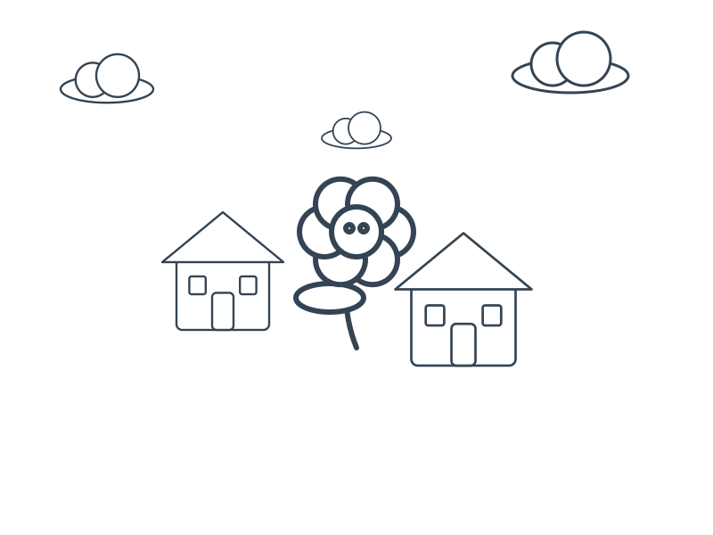
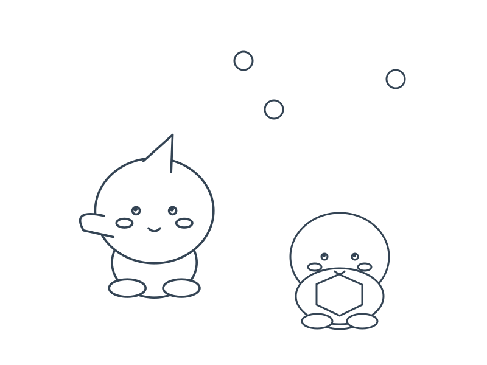
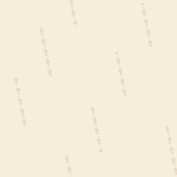
Остров-конструктор
Маленький мир из кубиков: маяк, сад и вечерний причал.
Буквоед
Сиреневый обжора с добрыми глазами и буквенной кондитерской.
Лунная Долина
Лисёнок, сова и зайчик берегут светящиеся растения.
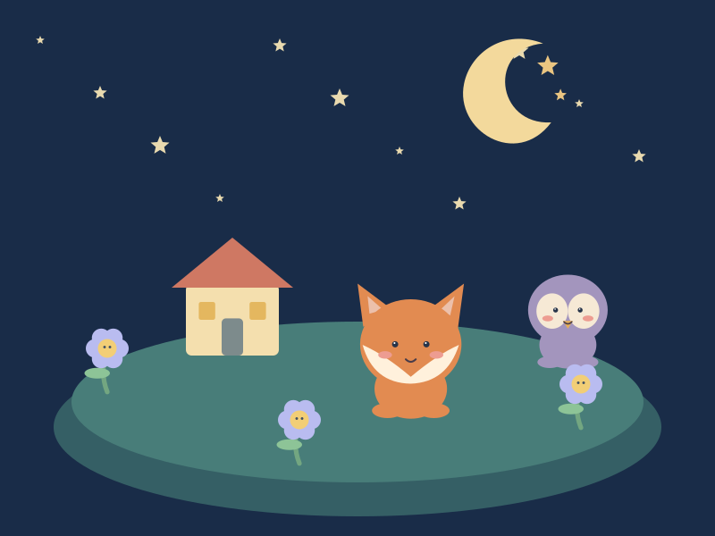
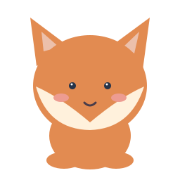
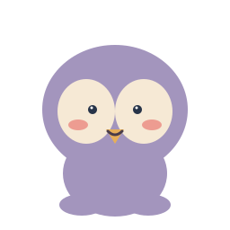

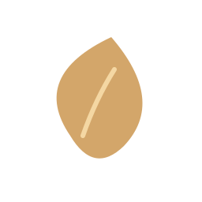
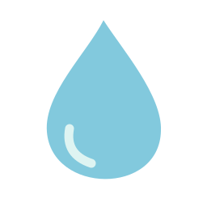
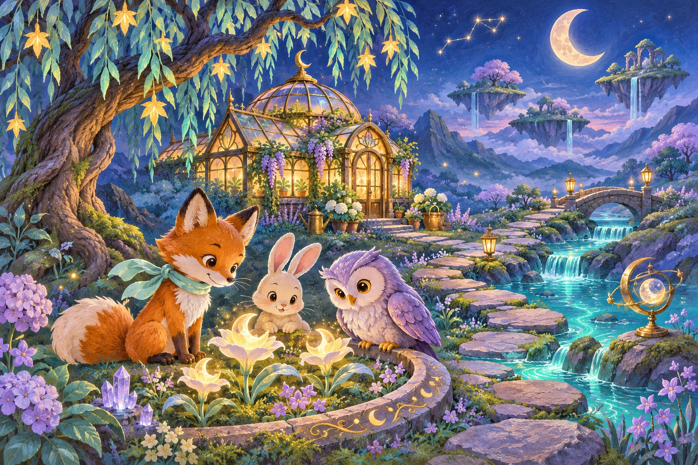
3D-песочница
Деревянные дорожки, шары, арки и эксперименты с равновесием.
Пазлы
Каждая картинка — маленькая история с узнаваемыми ориентирами.
Космический садовник
Комета приносит воду по волшебным лианам к звёздному цветку.
Кто где живёт
Звери с характером и восемь отчётливо разных природных миров.
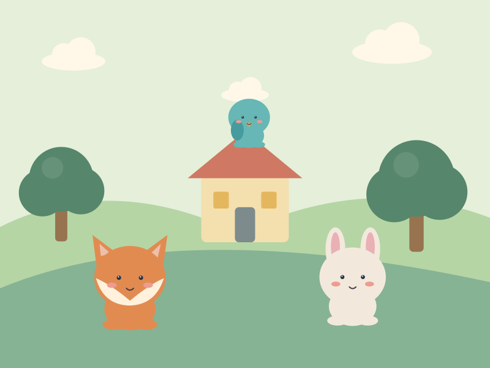

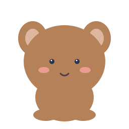


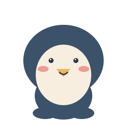
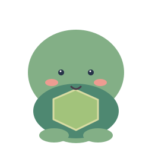
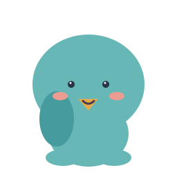
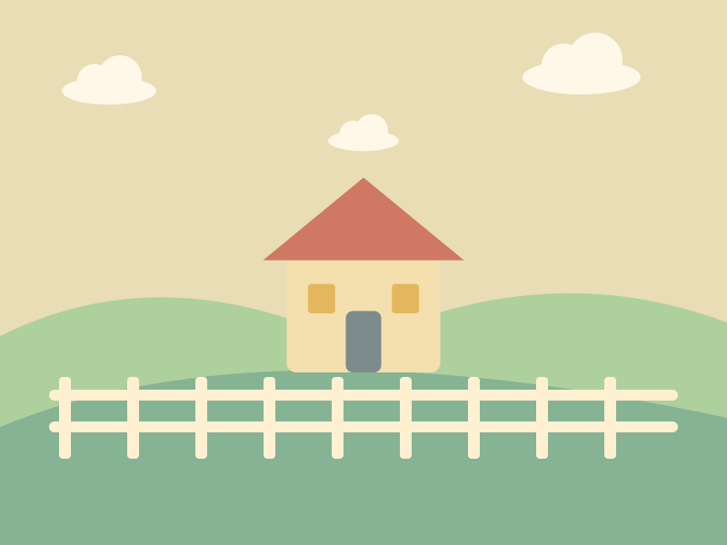
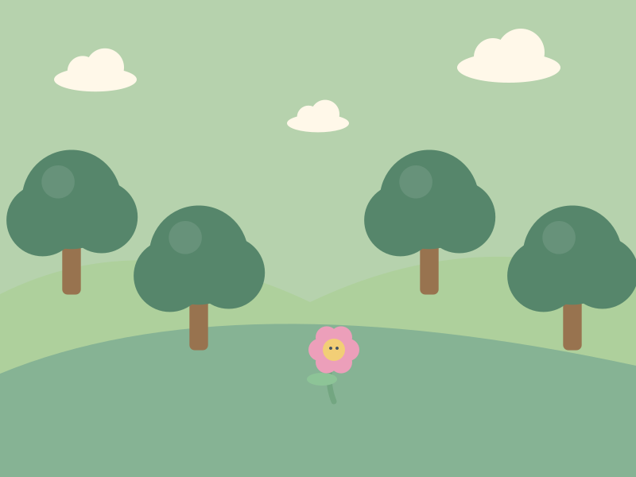